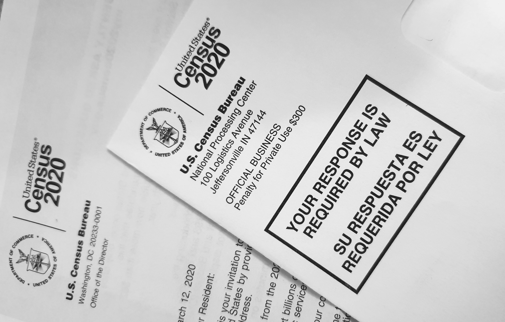

Essi Amefia Monneus
Full Stack Developer

Advance Excel
I am proficient in employing statistical analysis to model, predict, and
forecast trends in Excel. I can expertly build VBA scripts in Excel to automate
tedious manual processes.
Data Visualization
I am able to create in-depth graphs, charts, and tables utilizing a
wide-variety of data-driven programming languages
and libraries. I am proficient with core Python, data analytic tools
like NumPy, Pandas, Matplotlib, and specific
libraries for interacting with web data like
Requests and BeautifulSoup
Database Management
I am able to apply ETL process (Extract, Transform, Load) to
transform and consolidate data from multiple sources. I am confortable using SQL and MongoDB databases.
Web Development
I really enjoy both Front-end and Back-end developemnt. I can use geographic data to create visually exciting,
interactive, and informative maps. I enjoy building custom interactive data visualizations using
D3.js and other JavaScript libraries. I am proficient with HTML, CSS, Bootstrap, Dashboarding, JavaScript Charting, D3.js, Geomapping with Leaflet.js
My projects
Please kindly click on the links to see the codes.

Pharmaceutical Clinical Data Analysis
In this project, I have been given access to the complete data of a recent animal study.
In the study, 249 mice identified with SCC tumor growth and were treated through a variety of drug regimens.
Over the course of 45 days, the tumor development was observed and measured.
The purpose of this study was to compare the performance of Pymaceuticals' drug of interest, Capomulin, versus the other treatment regimens.
Using Python Matplotlib, I have generated all of the tables and figures needed for the technical report of the study.
Discovering Mars!
In this project, build a web application that scrapes various websites for data related to the Mission to Mars and displays the information on a single HTML page.
Using Jupiter programming, I retrieved various data from the NASA and USGS sites. I then used MongoDB with Flask templating to create a new HTML page that displays all of the information scraped from the URLs above. I successfully transferred all the relevant information about the latest mission.

Census Bureau Data Visualization
This project aims to study a specific population and establish the relationship between different variables such as Healthcare, Poverty, Smoking habit, Obesity, Household income. I retrieved the US Census Bureau data using API, and I built the interactive scatter plot using Javascript. Feel free to click on the variable on each axis and see the graph change!
Music Muse
Using data obtained from Kaggle, I created an interactive webpage with my teammates. The data was composed of songs on Spotify from 2000 to 2020. We wanted the user to know the top 10 songs for each year that they have selected. The was a group project. I contributed to the back-end development.